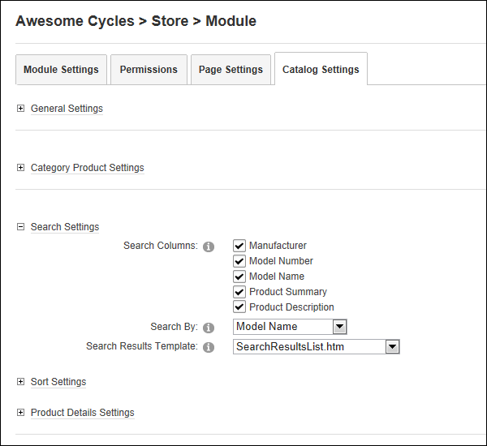

- At Search Columns,
- At Search By, select the default search column.
- At Search Results Template, select the template to be used for search results. The template included with the Store is called SearchResultsList.htm.
How to manage search setting for the Store Catalog module.
Prerequisite. The "Show Category Products" field must be checked in the General Settings section to configure these settings.
